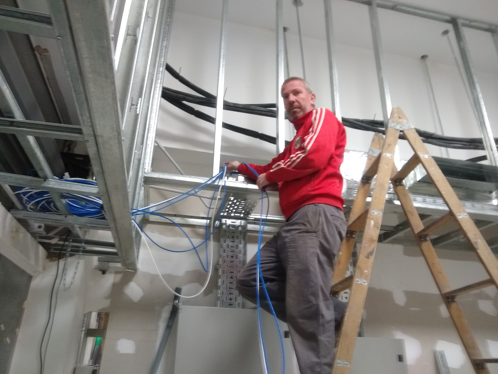

Acerca de mí
Soy estudiante de informática en la Universidad Nacional del Comahue (UNCO). Me apasiona la tecnología y el desarrollo de software.
En esta página comparto mis proyectos, ideas y algunos datos personales relacionados con mi trayectoria académica y profesional.
